Frequentist and Bayesian Comparison of ANOVA
PSYC 6019-A01 / PSYC 6022-A01
2025-10-16 | Lab 8
Outline
ANOVA review
Frequentist ANOVA
Bayesian ANOVA
ANOVA
Analysis of Variance (ANOVA)
Analysis of Variance (ANOVA)
Method of understanding how categorical variables are related to a continuous outcome of interest
Compares between groups to within groups variance to jointly compare multiple means
ANOVA: Partitioning Variance
Total Sum of Squared Errors: error term around the grand mean
\[ SS_{total} = \sum (x_i - \bar{x})^2 \]
If we have outcomes separated into different groups (e.g., control, treatment A, treatment B), can partition \(SS_{total}\) into between groups sums of squares \(SS_B\) and within groups sums of squares \(SS_W\)
\[ SS_{total} = SS_B + SS_W \]
So, with \(j\) indexing \(J\) total groups and \(i\) indexing \(I\) people within a group, we can write \(SS_{total}\) as…
ANOVA: Partitioning Variance
Total Sum of Squared Errors: error term around the grand mean
\[ SS_{total} = \sum_{j=1}^J \sum_{i=1}^I (x_{ij} - \bar{x})^2 \]
Between-Group Sum of Squares: error between the group mean and the grand mean
\[ SS_{B} = \sum_{j=1}^J n_j (\bar{x_{j}} - \bar{x})^2 \]
Within-Group Sum of Squares: error between observations and their group mean
\[ SS_{W} = \sum_{j=1}^J \sum_{i=1}^I (x_{ij} - \bar{x_{j}})^2 \]
ANOVA: Partitioning Variance
Let’s say we have three groups and some outcome variable
ANOVA: Partitioning Variance
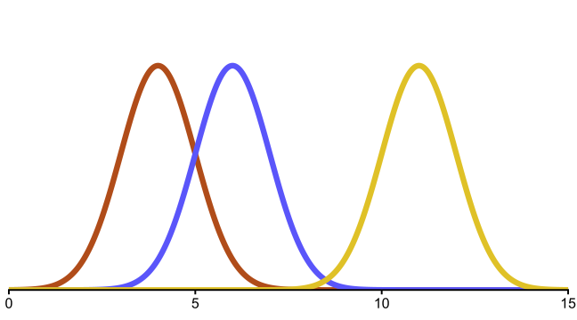
ANOVA: Partitioning Variance
ANOVA: Partitioning Variance
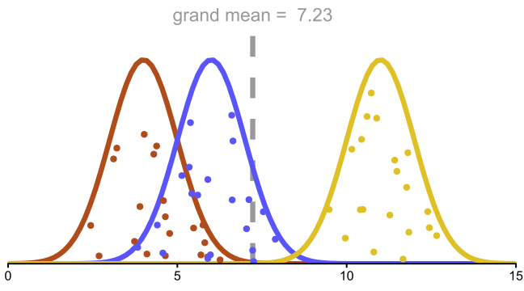
Partitioning Variance: \(SS_{total}\)
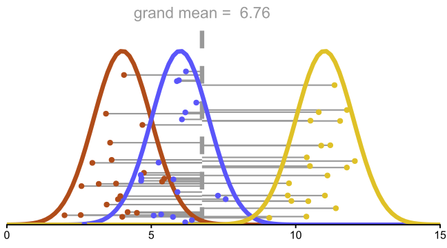
Partitioning Variance
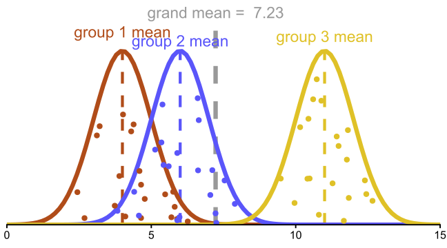
Partitioning Variance: \(SS_B\)
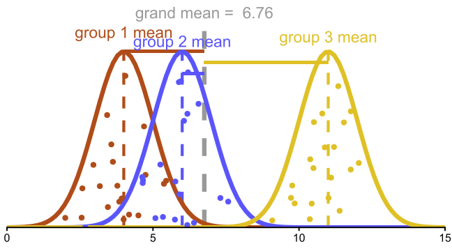
Partitioning Variance: \(SS_W\)
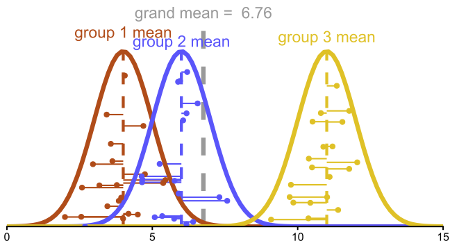
Partitioning Variance
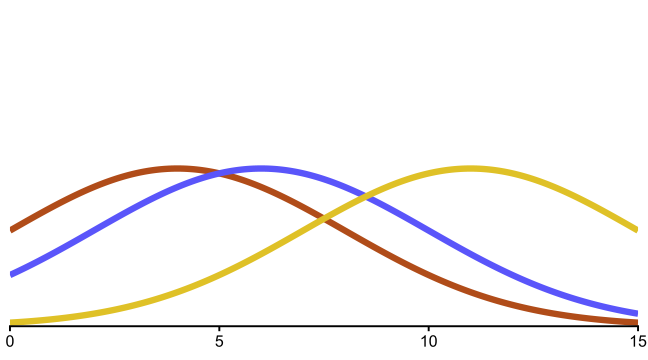
Partitioning Variance
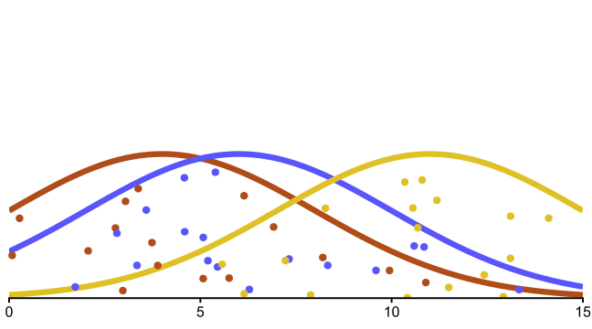
Partitioning Variance
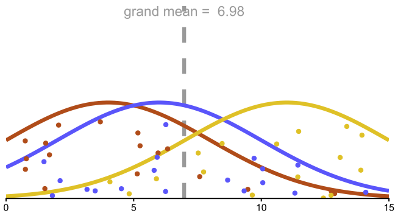
Partitioning Variance: \(SS_{total}\)
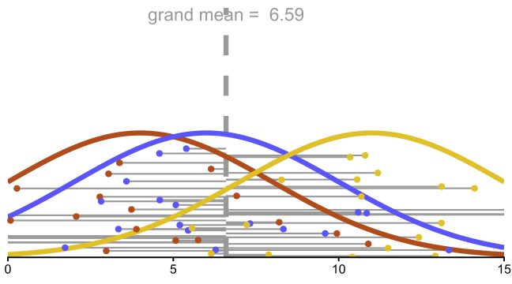
Partitioning Variance
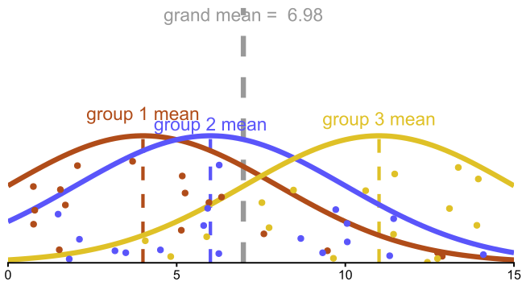
Partitioning Variance: \(SS_B\)
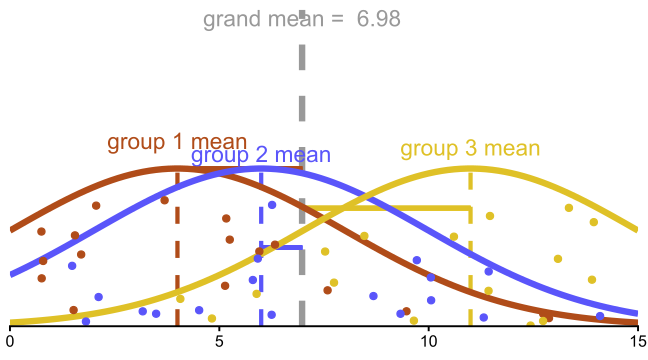
Partitioning Variance: \(SS_W\)
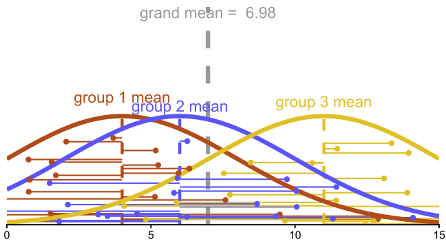
Partitioning Variance
Ratio of \(SS_B\) to \(SS_W\)
If \(SS_B >> SS_W\), good model. Easy to predict differences based on groups.
If \(SS_B \approx SS_W\), less good model. Not easy to predict differences based on groups.
\[ F \propto \frac{\text{between-group variance}}{\text{within-group variance}} \]
ANOVA: \(F\)
Mean Square Between
\(MS_B = \frac{SS_B}{J - 1} = \frac{\sum_{j=1}^J n_j (\bar{x_{j}} - \bar{x})^2}{J - 1}\)
Mean Square Within
\(MS_W = \frac{SS_W}{N - J} = \frac{\sum_{j=1}^J \sum_{i=1}^I (x_{ij} - \bar{x})^2}{N - J}\)
\[ F = \frac{MS_B}{MS_W} \]
ANOVA: Hypotheses
\(H_0\): \(\sigma^2_B = 0\)
\(H_1\): \(\sigma^2_B \neq 0\)
Equivalent to:
\(H_0\): \(\mu_1 = \mu_2 = ... = \mu_J\)
\(H_1\): not \(H_0\)
Penguins ANOVA Example
Chinstrap

Adelie

Gentoo

Penguins ANOVA Examples
glimpse(penguins)Rows: 344
Columns: 8
$ species <fct> Adelie, Adelie, Adelie, Adelie, Adelie, Adelie, Adel…
$ island <fct> Torgersen, Torgersen, Torgersen, Torgersen, Torgerse…
$ bill_length_mm <dbl> 39.1, 39.5, 40.3, NA, 36.7, 39.3, 38.9, 39.2, 34.1, …
$ bill_depth_mm <dbl> 18.7, 17.4, 18.0, NA, 19.3, 20.6, 17.8, 19.6, 18.1, …
$ flipper_length_mm <int> 181, 186, 195, NA, 193, 190, 181, 195, 193, 190, 186…
$ body_mass_g <int> 3750, 3800, 3250, NA, 3450, 3650, 3625, 4675, 3475, …
$ sex <fct> male, female, female, NA, female, male, female, male…
$ year <int> 2007, 2007, 2007, 2007, 2007, 2007, 2007, 2007, 2007…penguins# A tibble: 344 × 8
species island bill_length_mm bill_depth_mm flipper_length_mm body_mass_g
<fct> <fct> <dbl> <dbl> <int> <int>
1 Adelie Torgersen 39.1 18.7 181 3750
2 Adelie Torgersen 39.5 17.4 186 3800
3 Adelie Torgersen 40.3 18 195 3250
4 Adelie Torgersen NA NA NA NA
5 Adelie Torgersen 36.7 19.3 193 3450
6 Adelie Torgersen 39.3 20.6 190 3650
7 Adelie Torgersen 38.9 17.8 181 3625
8 Adelie Torgersen 39.2 19.6 195 4675
9 Adelie Torgersen 34.1 18.1 193 3475
10 Adelie Torgersen 42 20.2 190 4250
# ℹ 334 more rows
# ℹ 2 more variables: sex <fct>, year <int>Frequentist ANOVA
ANOVA: R function
aov(y ~ grouping_var, data = data)
○ y = outcome
○ grouping_var = name of grouping variable
○ data = dataframe that includes grouping_var and y
Very similar syntax to lm(y ~ predictor) (and you can think of it similarly)
Uses dummy coding by default
summary(model)
ANOVA: Example
Df Sum Sq Mean Sq F value Pr(>F)
species 2 52473 26237 594.8 <2e-16 ***
Residuals 339 14953 44
---
Signif. codes: 0 '***' 0.001 '**' 0.01 '*' 0.05 '.' 0.1 ' ' 1Huge \(F\)-statistic!
We reject the null in favor of the alternative that there is significant variation between penguin species in flipper length
Effect Sizes: Example
\(\eta^2\)
effectsize::eta_squared(flipper_model)# Effect Size for ANOVA
Parameter | Eta2 | 95% CI
-------------------------------
species | 0.78 | [0.75, 1.00]
- One-sided CIs: upper bound fixed at [1.00].\(\omega^2\)
effectsize::omega_squared(flipper_model)# Effect Size for ANOVA
Parameter | Omega2 | 95% CI
---------------------------------
species | 0.78 | [0.75, 1.00]
- One-sided CIs: upper bound fixed at [1.00].In this case, \(\eta_2\) and \(\omega^2\) happen to be the same.
Assumptions
Visualize the distributions to check for normality, outliers, and homogeniety of variance.
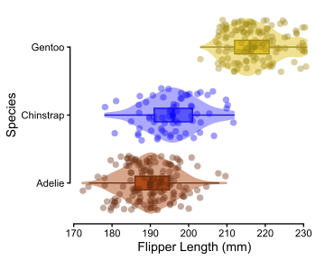
penguins_cleaned |>
ggplot(aes(x = species, y = flipper_length_mm, fill = species, color = species)) +
geom_violin(alpha = 0.5, color = NA) +
geom_boxplot(width = 0.2, outliers = F) +
geom_jitter(alpha = 0.4, shape = 16, size = 3) +
stat_summary(geom = "point", fun = mean, size = 2.5) +
scale_fill_manual(values = c("#b04c19", "#5a55fa", "#dfc127")) +
scale_color_manual(values = scales::col_darker(c("#b04c19", "#5a55fa", "#dfc127"), 15)) +
labs(x = "Species", y = "Flipper Length (mm)") +
guides(y = guide_axis(cap = "both"), x = guide_axis(cap = "both")) +
coord_flip() +
theme_classic(base_size = 14) +
theme(legend.position = "none")Bayesian ANOVA
Bayesian ANOVA: Example
Can use stan_glm() within rstanarm again.
Model Info:
function: stan_glm
family: gaussian [identity]
formula: flipper_length_mm ~ species
algorithm: sampling
sample: 4000 (posterior sample size)
priors: see help('prior_summary')
observations: 342
predictors: 3
Estimates:
mean sd 10% 50% 90%
(Intercept) 190.0 0.5 189.3 190.0 190.6
speciesChinstrap 5.9 1.0 4.6 5.9 7.1
speciesGentoo 27.2 0.8 26.2 27.2 28.3
sigma 6.7 0.3 6.3 6.7 7.0
Fit Diagnostics:
mean sd 10% 50% 90%
mean_PPD 200.9 0.5 200.3 200.9 201.6
The mean_ppd is the sample average posterior predictive distribution of the outcome variable (for details see help('summary.stanreg')).
MCMC diagnostics
mcse Rhat n_eff
(Intercept) 0.0 1.0 3691
speciesChinstrap 0.0 1.0 3868
speciesGentoo 0.0 1.0 3660
sigma 0.0 1.0 4371
mean_PPD 0.0 1.0 4068
log-posterior 0.0 1.0 1950
For each parameter, mcse is Monte Carlo standard error, n_eff is a crude measure of effective sample size, and Rhat is the potential scale reduction factor on split chains (at convergence Rhat=1).With dummy coding,
○ $_0 = $ mean of reference group (here, \(\mu_\text{Adelie}\))
○ $_1 = $ difference between target group and reference group (here, \(\mu_\text{Chinstrap} - \mu_\text{Adelie}\))
○ $_2 = $ difference between target group and reference group (here, \(\mu_\text{Gentoo} - \mu_\text{Adelie}\))
Check Diagnostics
posterior::summarise_draws(flipper_model_bayes, "mean", "sd", "rhat", "ess_bulk", "ess_tail")# A tibble: 4 × 6
variable mean sd rhat ess_bulk ess_tail
<chr> <dbl> <dbl> <dbl> <dbl> <dbl>
1 (Intercept) 190. 0.541 1.00 3700. 3112.
2 speciesChinstrap 5.87 0.970 1.000 3873. 3119.
3 speciesGentoo 27.2 0.801 1.00 3700. 2662.
4 sigma 6.66 0.254 1.00 4391. 2812.bayesplot::mcmc_trace(flipper_model_bayes)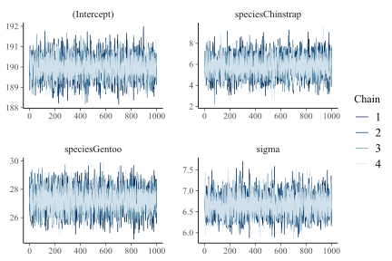
bayesplot::mcmc_rank_overlay(flipper_model_bayes)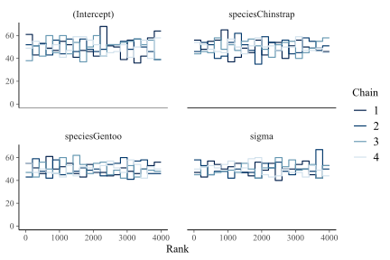
Comparison
summary(flipper_model) Df Sum Sq Mean Sq F value Pr(>F)
species 2 52473 26237 594.8 <2e-16 ***
Residuals 339 14953 44
---
Signif. codes: 0 '***' 0.001 '**' 0.01 '*' 0.05 '.' 0.1 ' ' 1summary(flipper_model_bayes)
Model Info:
function: stan_glm
family: gaussian [identity]
formula: flipper_length_mm ~ species
algorithm: sampling
sample: 4000 (posterior sample size)
priors: see help('prior_summary')
observations: 342
predictors: 3
Estimates:
mean sd 10% 50% 90%
(Intercept) 190.0 0.5 189.3 190.0 190.6
speciesChinstrap 5.9 1.0 4.6 5.9 7.1
speciesGentoo 27.2 0.8 26.2 27.2 28.3
sigma 6.7 0.3 6.3 6.7 7.0
Fit Diagnostics:
mean sd 10% 50% 90%
mean_PPD 200.9 0.5 200.3 200.9 201.6
The mean_ppd is the sample average posterior predictive distribution of the outcome variable (for details see help('summary.stanreg')).
MCMC diagnostics
mcse Rhat n_eff
(Intercept) 0.0 1.0 3691
speciesChinstrap 0.0 1.0 3868
speciesGentoo 0.0 1.0 3660
sigma 0.0 1.0 4371
mean_PPD 0.0 1.0 4068
log-posterior 0.0 1.0 1950
For each parameter, mcse is Monte Carlo standard error, n_eff is a crude measure of effective sample size, and Rhat is the potential scale reduction factor on split chains (at convergence Rhat=1).Effect Coding
Dummy coding compares \(g-1\) groups to \(\beta_0 =\) reference group mean:
| Predictor | \(g_1\) | \(g_2\) | \(\cdots\) | \(g_{G-1}\) | \(g_G\) |
|---|---|---|---|---|---|
| \(x_1\) | 1 | 0 | \(\cdots\) | 0 | 0 |
| \(x_2\) | 0 | 1 | \(\cdots\) | 0 | 0 |
| \(\vdots\) | \(\vdots\) | \(\vdots\) | \(\ddots\) | \(\vdots\) | \(\vdots\) |
| \(x_{G-1}\) | 0 | 0 | \(\cdots\) | 1 | 0 |
Dummy coding:
- \(\beta_0: = \mu_3\)
- \(\beta_1: = \mu_{1} - \mu_3\)
- \(\beta_2: = \mu_{2} - \mu_3\)
Effects or contrast coding compares \(g-1\) groups to \(\beta_0 =\) grand mean:
| Predictor | \(g_1\) | \(g_2\) | \(\cdots\) | \(g_{G-1}\) | \(g_G\) |
|---|---|---|---|---|---|
| \(x_1\) | 1 | 0 | \(\cdots\) | 0 | -1 |
| \(x_2\) | 0 | 1 | \(\cdots\) | 0 | -1 |
| \(\vdots\) | \(\vdots\) | \(\vdots\) | \(\ddots\) | \(\vdots\) | \(\vdots\) |
| \(x_{G-1}\) | 0 | 0 | \(\cdots\) | 1 | -1 |
Contrast/Effects coding:
- \(\beta_0: = \mu\)
- \(\beta_1: = \mu_{1} - \mu\)
- \(\beta_2: = \mu_{2} - \mu\)
Compares groups to grand mean
Changing to Effect Coding in R
We can tell R we want to use effect coding instead of dummy coding; we don’t have to manually create the effect coding columns ourselves.
We need to set the contrasts setting of our grouping variable to contr.sum. Everything you run after that will use effect coding.
If you ever need to change it back to dummy coding, set it to contr.treatment.
contrasts(penguins_cleaned$species) <- contr.sum
Model Info:
function: stan_glm
family: gaussian [identity]
formula: flipper_length_mm ~ species
algorithm: sampling
sample: 4000 (posterior sample size)
priors: see help('prior_summary')
observations: 342
predictors: 3
Estimates:
mean sd 10% 50% 90%
(Intercept) 201.0 0.4 200.5 201.0 201.5
species1 -11.0 0.5 -11.7 -11.0 -10.4
species2 -5.1 0.6 -5.9 -5.2 -4.4
sigma 6.7 0.2 6.3 6.6 7.0
Fit Diagnostics:
mean sd 10% 50% 90%
mean_PPD 200.9 0.5 200.3 200.9 201.6
The mean_ppd is the sample average posterior predictive distribution of the outcome variable (for details see help('summary.stanreg')).
MCMC diagnostics
mcse Rhat n_eff
(Intercept) 0.0 1.0 3599
species1 0.0 1.0 3198
species2 0.0 1.0 2806
sigma 0.0 1.0 4240
mean_PPD 0.0 1.0 4068
log-posterior 0.0 1.0 1815
For each parameter, mcse is Monte Carlo standard error, n_eff is a crude measure of effective sample size, and Rhat is the potential scale reduction factor on split chains (at convergence Rhat=1).